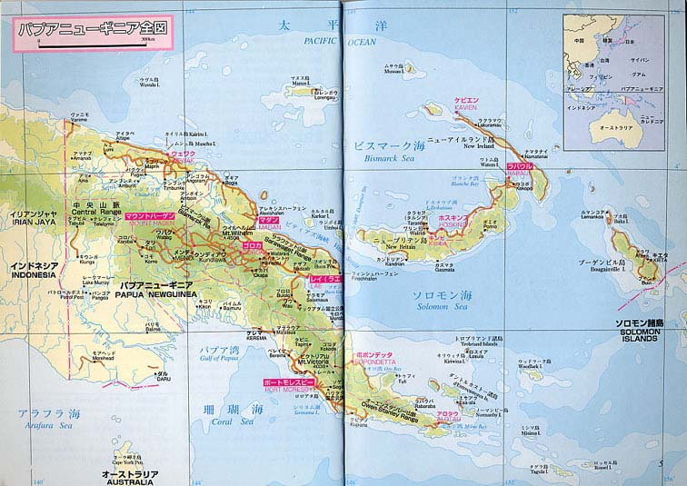

|
|
第５ 昭和１７年１２月現在、東部ニユーギニア作戦の戦況
ラバウルには第八方面軍司令部が有り、その隷下部隊に第十七軍（軍司令官百武中将）と第十八軍（軍司令官安達中
将は昭和１７年１１月１４日に軍司令官に発令されている）がいました。間もなく第十七軍司令部はブーゲンビルに侵
攻し、続いて第十八軍司令部も東部ニユーギニアに侵攻して行った。
第十八軍通信隊の松本部隊は無線通信部隊でありました。部隊長は松本少佐殿で五十三歳という高齢でしたが、経験
豊かな人格者でありました。無線小隊長逹は２４、５才の若者ばかりでした。話が脇道にそれますが、通信隊は体力的
には楽でした。そのため、当時は、一に通信、二にラッパ、三にヨウチン衛生兵、と軽口をたたかれ羨ましがられていました。
……その当時、ソ聨の陸軍通信学校の学生は全員で四百名。その半分の２００名は女性でありました。また、無線通信兵
は非戦闘員でしたが、繊細な神経とある種の能力が要求されました。南海支隊を撃退した敵将は有名なマックアーサー大
将でした。この敵将はニユーギニア、ガダルカナルの島伝いに南太平洋から侵攻し、日本の本土に上陸している。……
南海支隊を救援し、東部ニユーギニアを確保するため、大本営命令を受けた電信第三聯隊の先発隊の松本部隊はラバウ
ルに到着し布陣していました。南海支隊配属の第四十六固定無線隊は昭和１８年１月、松本部隊に編入されました。同年
２月松本少佐はブナ、ギルワの第一線まで出かけ、直接、無線通信の指揮を取りました。
……松本中佐は日本に生還し、昭和５８年、９３歳で天寿を全うした……
一方、ブナ、ギルワの後方基地ラエを確保するため、五十一師団が「ラエ」に上陸作戦を実施したが失敗に終った。そ
のためラエより遥か後方５５０キロ地点にある「ウエワク」と「マダン」（ラエから２５０キロ後方）を後方基地として
確保する計画がたてられた。
この計画により、敵前上陸敢行の実行部隊、花輪支隊に猛軍通信隊無線通信隊の配属が決定された。
|
